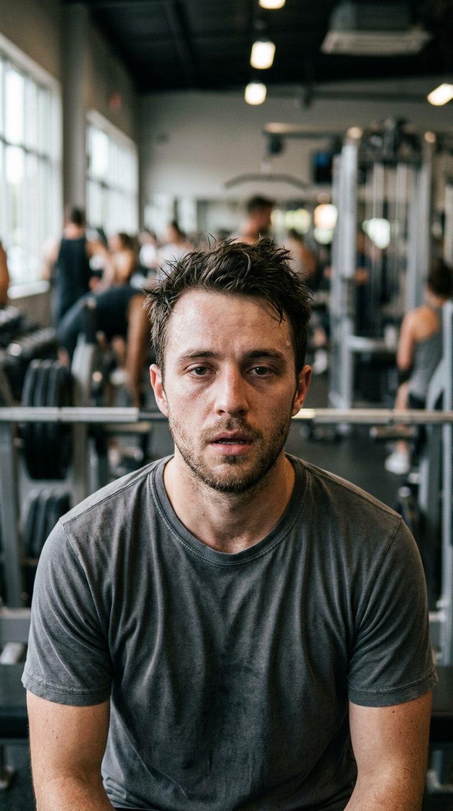
Close-up of a fit young man in his late 20s looking directly at camera with a tired expression, gym background blurred, natural afternoon lighting, cinematic shallow depth of field, camera slowly pushes in on his face, vertical 9:16⬇ imagen
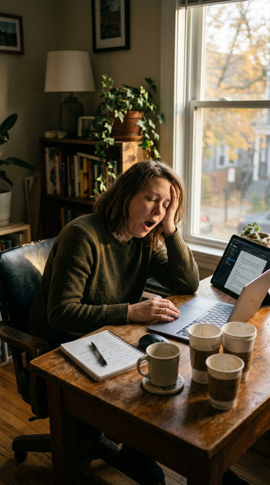
Medium shot of a tired person sitting at a desk yawning, three empty coffee cups on the desk, afternoon golden light through a window, head resting on hand, laptop open but ignored, documentary style, natural colors, vertical 9:16⬇ imagen
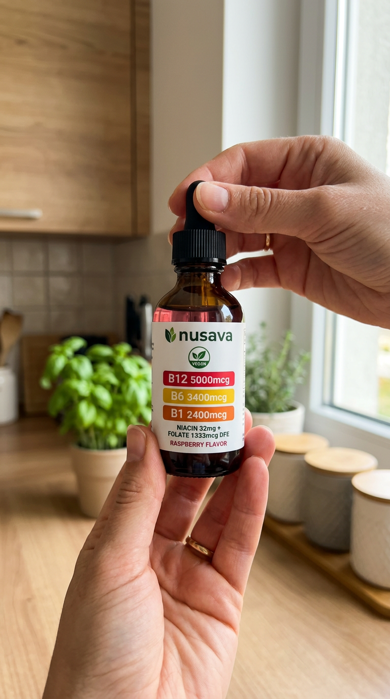
Close-up of hands holding a 60ml dark amber glass dropper bottle with black cap and white label showing green leaf logo nusava, green VEGAN badge, red bar B12 5000mcg, yellow bar B6 3400mcg, orange bar B1 2400mcg, NIACIN+FOLATE, RASPBERRY FLAVOR, bottle identical to the first frame. Person examines the bottle in kitchen lighting, shallow depth of field, casual authentic feel, camera slowly rotates around the bottle, vertical 9:16⬇ imagen
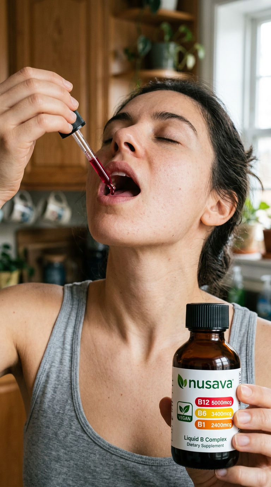
Close-up of a person tilting head back, eyes closed, placing sublingual drops under their tongue from a glass dropper holding deep red raspberry liquid, natural morning light, kitchen background, slow deliberate action, authentic handheld camera feel, vertical 9:16⬇ imagen
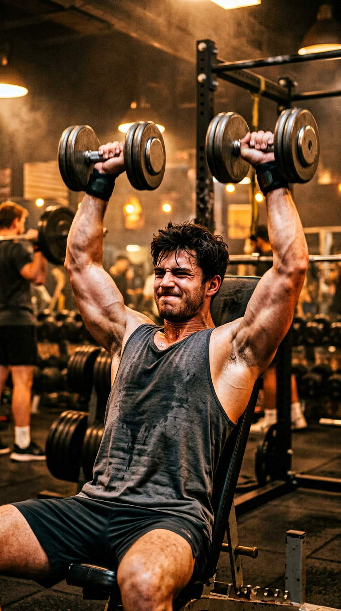
Dynamic shot of a fit person training energetically in a gym, lifting weights with focus and power, sweat visible, warm gym lighting, cinematic motion blur, motivational energy, vertical 9:16⬇ imagen
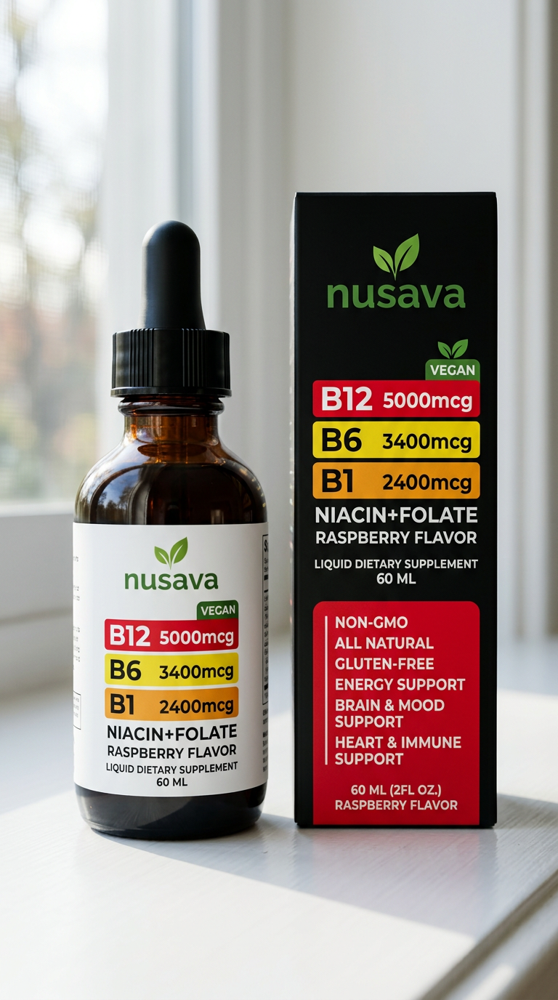
Product hero shot of the nusava 60ml dark amber dropper bottle standing next to its black retail box with red benefits panel, centered on clean white surface, soft natural window light, minimalist aesthetic, slight bokeh, professional but authentic, vertical 9:16⬇ imagen
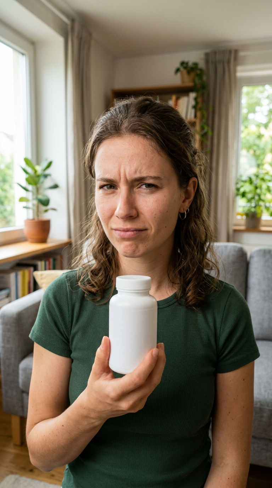
Medium shot of a young woman in her mid-20s holding a white supplement pill bottle, looking at camera with skeptical knowing expression, slight head shake, casual home setting, natural daylight, authentic UGC feel, vertical 9:16⬇ imagen
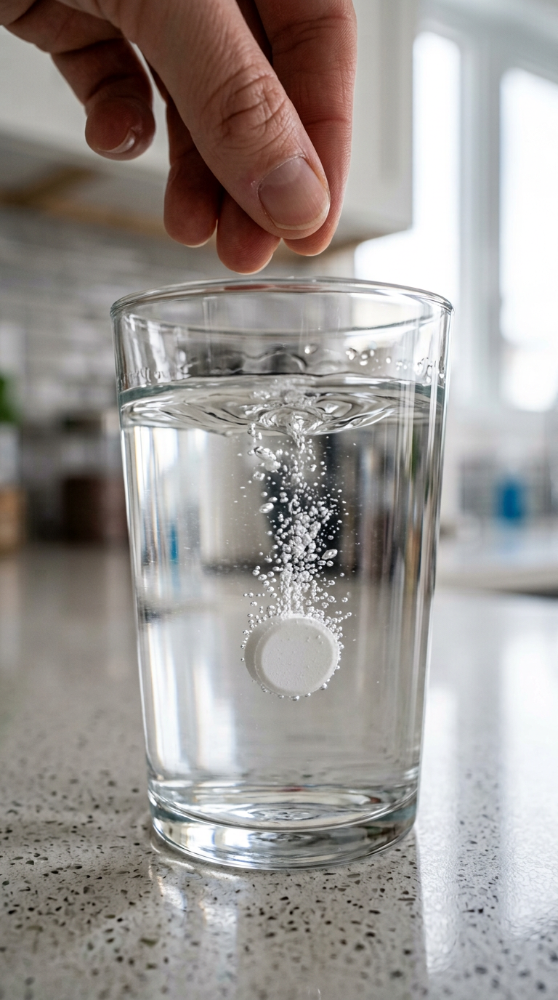
Close-up of a hand dropping a white pill into a clear glass of water, pill sinks slowly with small bubbles forming, camera follows the pill down, macro shot, clean kitchen setting, soft lighting, vertical 9:16⬇ imagen
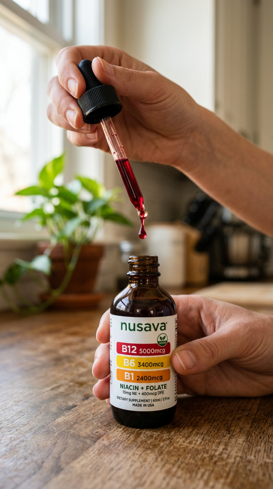
Hands opening a 60ml dark amber nusava bottle, pulling out the glass dropper showing deep red raspberry liquid, camera focuses on the drop forming at the tip, warm natural lighting, kitchen background blurred, product reveal moment, vertical 9:16⬇ imagen
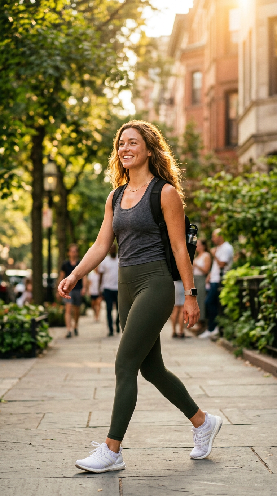
Quick montage of a person training in gym with energy, then focused working on laptop, then walking outside with sunlight on face, warm golden tones, person looks vibrant and healthy, dynamic cuts, lifestyle feel, vertical 9:16⬇ imagen
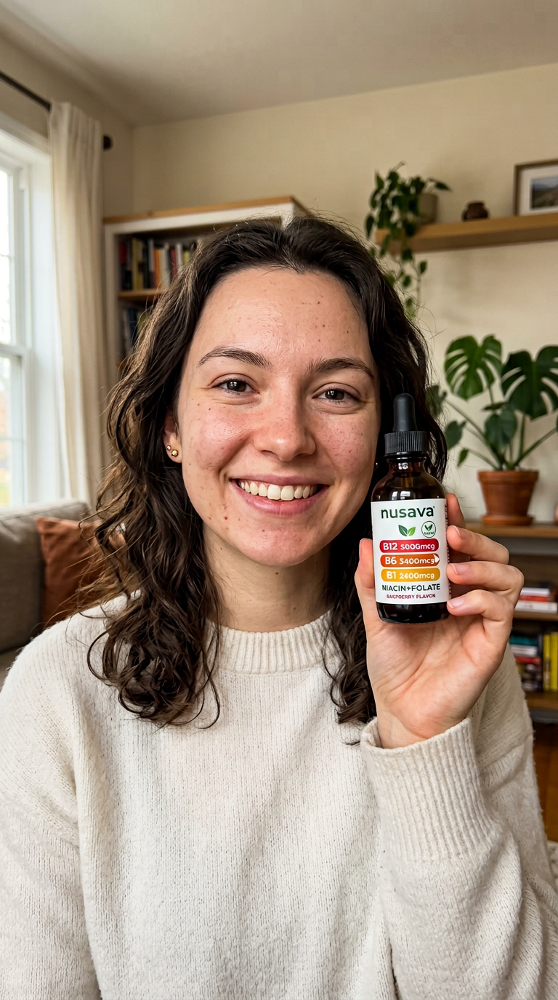
The same young woman now smiling confidently, holding the nusava 60ml amber dropper bottle next to her face, warm natural light, product visible and in focus, authentic testimonial style, vertical 9:16⬇ imagen
Vertical 9:16 UGC ad, continuous take: a fit young man in his late 20s looks at camera tired in a blurred gym, camera pushes in; whip pan to him yawning at a desk with three empty coffee cups in golden afternoon light, head on hand; he then picks up and examines a 60ml dark amber nusava dropper bottle (white label, green leaf logo, VEGAN badge, red B12 5000mcg bar, yellow B6 3400mcg bar, orange B1 2400mcg bar), camera slowly rotates around the bottle. Authentic handheld feel, natural colors.
Vertical 9:16 UGC ad, continuous take: close-up of a person tilting head back, eyes closed, placing deep red raspberry drops under the tongue from a glass dropper; cut to the same person training explosively in a gym with sweat and warm light; final frame: the nusava amber bottle and its black retail box centered on a white surface in soft window light. Authentic handheld feel.
Vertical 9:16 UGC testimonial, continuous take: a young woman holds a white pill bottle with a skeptical head shake; macro insert of a white pill sinking with bubbles in a glass of water; she then opens a 60ml dark amber nusava bottle and lifts the dropper with a deep red raspberry drop forming, warm kitchen light. Authentic feel.
Vertical 9:16 UGC testimonial, continuous take: a vibrant young woman walking outside with golden sunlight on her face, then smiling confidently at camera holding the nusava amber dropper bottle next to her cheek, product in focus, warm natural light.
{kind=link}
{kind=link}
{kind=link}
{kind=link}
{kind=link}
{kind=link}
{kind=link}
{kind=link}
{kind=link}
{kind=link}
{kind=link}